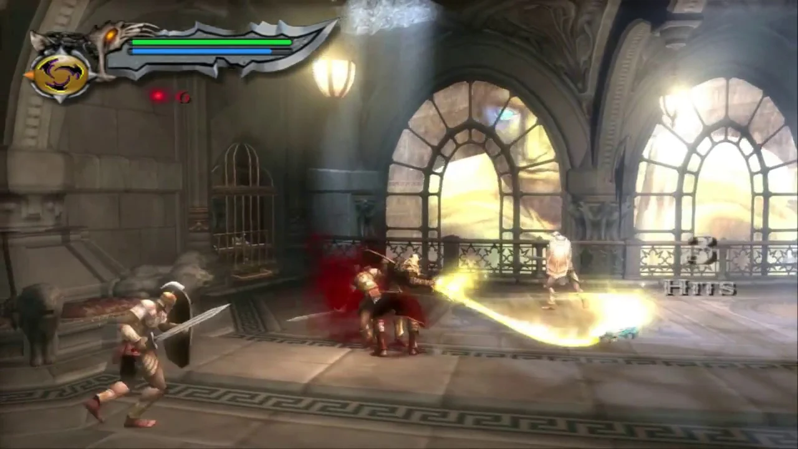
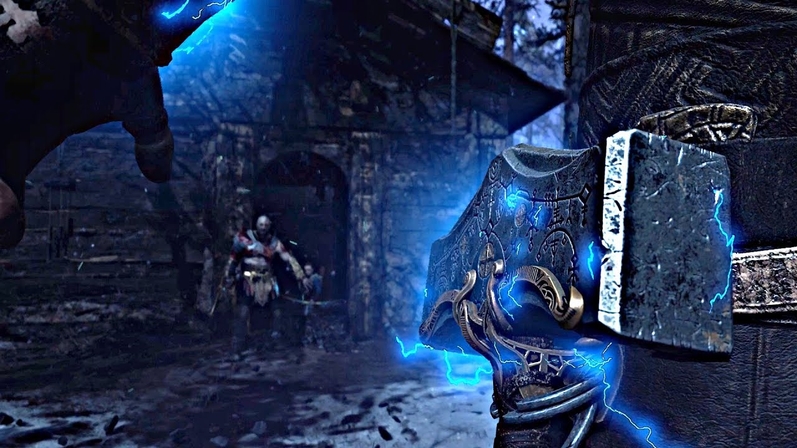
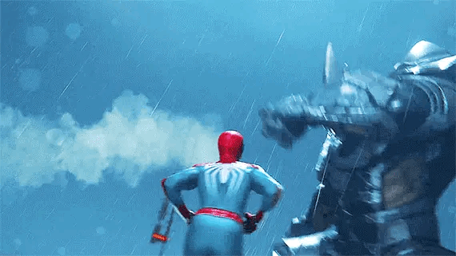

OS MELHORES JOGOS DE TODOS! By Playstation
Desenvolvido para fins educativos todos os materiais apresentados neste site foram tirados da internet
- Xbox
- Página inicial
- Nintendo
- Multi Plataforma
Por console
Playstation
Playstation foi a marca de console que eu mais tive na vida, 2 kkkkk, não é muito mas foi a maior quantidade kk, aqui vamos ver franquias e jogos que me marcaram!
God of War 2

God of War II é um jogo eletrônico de ação-aventura e hack and slash desenvolvido pela Santa Monica Studio e publicado pela Sony Computer Entertainment (SCE). Lançado pela primeira vez em 13 de março de 2007 para PlayStation 2, é o segundo jogo da franquia God of War e o sexto em ordem cronológica, sendo a continuação de God of War (2005). O jogo é vagamente baseado na mitologia grega e ambientado na Grécia Antiga, com a vingança sendo o tema central. O personagem do jogador é o protagonista Kratos, o novo deus da guerra que tomou o lugar de Ares depois de ter o matado. Kratos é traído por Zeus, o rei dos deuses do Olimpo, que tira dele sua divindade e o mata. Lentamente arrastado para o submundo, ele é salvo pela titã Gaia, que o instrui a encontrar as Irmãs do Destino, pois elas possuem o poder para fazer Kratos voltar no tempo, impedir a traição de Zeus e consequentemente sua morte.
A jogabilidade é muito semelhante ao título anterior, centrando-se no combate baseado em combos, conseguido através da arma principal do jogador — as Lâminas de Atena (Athena's Blades, no original) — e armas secundárias adquiridas ao longo do jogo. Ele apresenta quick time events que exigem que o jogador pressione os botões de ação do controle em uma sequência cronometrada para derrotar inimigos e chefes mais fortes. O jogador pode usar até quatro ataques mágicos e uma habilidade de aprimoramento de poder como opções alternativas de combate. O jogo também apresenta quebra-cabeças e elementos de plataforma. Além de sua jogabilidade muito semelhante, God of War II apresenta quebra-cabeças aprimorados e quatro vezes mais chefes do que o original.
God of War II foi aclamado como um dos melhores jogos de ação para o PlayStation 2, e foi o Jogo de PlayStation do Ano no Golden Joystick Awards 2007. Em 2009, a IGN listou-o como o segundo melhor jogo de PlayStation 2 de todos os tempos, e tanto a IGN como a GameSpot o consideram como a "canção do cisne" da era do PlayStation 2. Em 2012, a revista Complex nomeou God of War II como o melhor jogo de PlayStation 2 de todos os tempos. Foi o jogo mais vendido no Reino Unido durante a semana do seu lançamento e vendeu 4,24 milhões de cópias em todo o mundo, tornando-se o décimo quarto jogo mais vendido do PlayStation 2 de todos os tempos. God of War II, juntamente com God of War (2005), foram remasterizados e lançados em 17 de novembro de 2009 como parte de God of War Collection para PlayStation 3. A versão remasterizada foi relançada em 28 de agosto de 2012 como parte de God of War Saga, também para PlayStation 3. Uma romantização do jogo foi publicada em fevereiro de 2013 e sua sequência, God of War III, foi lançada em março de 2010 para PlayStation 3.
JOGABILIDADE
God of War II é um jogo eletrônico de ação e aventura com elementos hack and slash. É um jogo para um jogador em terceira pessoa visualizado a partir de uma perspectiva de câmera fixa. O jogador controla o personagem Kratos em combates baseados em combos, plataformas e elementos de quebra-cabeça e batalhas contra inimigos que derivam principalmente da mitologia grega, incluindo harpias, minotauros, górgonas, grifos, ciclopes, cérberos, sirenes, sátiros e ninfas. Outros monstros foram criados especificamente para o jogo, incluindo legionários mortos-vivos, corvos, bárbaros mortos-vivos, lordes raivosos, javalis selvagens e o exército dos Destinos, incluindo sentinelas, guardiões e altos sacerdotes. Muitos dos ataques em combos usados em God of War reaparecem, apresentando mais do que o dobro de lutas contra chefes e quebra-cabeças mais difíceis que o original. Elementos de plataforma exigem que o jogador suba em paredes e escadas, salte através de abismos, balance em cordas e equilibre através de vigas para avançar por seções do jogo. Alguns quebra-cabeças são simples, como mover uma caixa para que o jogador possa usá-la como um ponto de partida para acessar uma rota inacessível com saltos normais, enquanto outros são mais complexos, como encontrar vários itens em diferentes áreas do jogo para destravar uma porta.
Em todo o mundo do jogo, o jogador encontra baús de cores verde, azul, vermelho e dourado, e cada baú contém orbs de determinada cor correspondente. Orbs verdes reabastecem a saúde do jogador, orbs azuis reenchem a magia permitindo mais uso, e orbs vermelhos fornecem experiência para melhorar armas e magia — permitindo novos e mais poderosos ataques. Orbs vermelhos também são coletados matando inimigos e destruindo certos objetos inanimados. Orbs dourados servem para reabastecer a Ira dos Titãs (Rage of the Titans), uma habilidade que o jogador desbloqueia durante a jogatina. Várias urnas também estão escondidas no jogo (por exemplo, a Urna de Gaia) que, após a conclusão do modo de desafio, desbloqueia habilidades especiais (por exemplo, magia ilimitada) para uso durante o jogo bônus.
COMBATE
A principal arma de Kratos é um par de lâminas presas a correntes que estão enroladas nos pulsos e antebraços do personagem. Chamadas de Lâminas de Atena neste jogo, elas podem ser ofensivamente usadas em várias manobras. Conforme o jogo avança, Kratos adquire novas armas — o Martelo do Bárbaro, a Lança do Destino e, periodicamente, a Lâmina do Olimpo (Barbarian Hammer, Spear of Destiny e Blade of Olympus, respectivamente) — oferecendo opções alternativas de combate. Embora Kratos comece o jogo com as Lâminas de Atena e com a magia Ira de Poseidon (Poseidon's Rage; ambos com poder máximo), o poder das lâminas é reduzido e a magia abandonada após um encontro com Zeus (a Fúria de Poseidon pode ser recuperada com uma certa urna). Como nos jogos anteriores, Kratos aprende a usar até quatro habilidades mágicas, como o Arco de Tifão (Typhon's Bane), que atua como um arco e flecha para alvos distantes, dando a ele uma variedade de maneiras de atacar e matar inimigos. Outras novas habilidades mágicas incluem a Fúria de Cronos (Cronos' Rage), Cabeça de Euríale (Euryale's Head) e o Tremor de Atlas (Atlas' Quake). A habilidade especial Ira dos Deuses, apresentada no jogo anterior, é substituída pela Ira dos Titãs; ao contrário do jogo anterior, o medidor de raiva — que permite o uso da habilidade — não precisa estar cheio para usar a habilidade e pode ser ligado e desligado à vontade.

Kratos retém o Tridente de Poseidon que ele obteve no jogo anterior e ganha novas relíquias; o Amuleto das Irmãs (Amulet of the Fates), o Velo de Ouro (Golden Fleece) e os Asas de Ícaro (Icarus' Wings), cada um sendo obrigado a avançar por certas etapas do jogo. Por exemplo, o Amuleto das Irmãs faz com que o tempo passe de maneira mais devagar e permite a solução de quebra-cabeças que não poderiam ser finalizados com o andamento normal do tempo. O Amuleto das Irmãs tem uso ilimitado antes de precisar ser recarregado (o que ocorre automaticamente e é representado por um medidor laranja que fica embaixo do medidor de magia). O Velo de Ouro desvia projéteis inimigos de volta para eles mesmos (usados para resolver certos quebra-cabeças). As Asas de Ícaro permitem que Kratos plane no ar, permitindo que atravesse grandes abismos que não podem ser cruzados com saltos normais.
O modo de desafio deste jogo chama-se Desafio dos Titãs (Challenge of the Titans) e exige que os jogadores completem uma série de tarefas específicas (por exemplo: matar todos os inimigos sem ser atacado). O jogador pode desbloquear trajes bônus para Kratos, vídeos de bastidores e arte conceitual dos personagens e ambientes, como recompensas, bem como o uso das habilidades encontradas nas urnas durante a primeira partida. A conclusão de cada nível de dificuldade libera recompensas adicionais, assim como a coleta de vinte olhos de ciclopes vencidos. Um novo modo, chamado Arena das Irmãs (Arena of the Fates), permite que os jogadores definam níveis de dificuldade e escolham seus próprios oponentes para melhorar suas habilidades.
ENREDO
Após Kratos se tornar o novo deus da guerra, passa a guiar os soldados de Esparta, liderando-os sobre várias batalhas e destruindo várias cidades. Antes de descer do Olimpo para ajudar seus guerreiros espartanos a destruir a cidade de Rodes, Kratos é avisado por Atena sobre as consequências de seus atos. Sem escutá-la, ele salta do Olimpo para Rodes e, ao chegar, uma águia retira parte do poder de Kratos e o deposita em uma estátua gigante (o Colosso de Rodes). Kratos, com muita raiva e acreditando ser Atena a responsável, vai em busca de derrotar o colosso para provar para os deuses do Olimpo que ele merece ser um deus. Nisso, Zeus, num aparente gesto de generosidade, oferece a Kratos a arma que acabou com a Grande Guerra e derrotou os titãs, a Lâmina do Olimpo. Somente com ela, Kratos conseguiria derrotar o Colosso.
Kratos durante uma batalha com Colosso de Rodes
Ao conseguir a espada, ele sacrifica os restos de seus poderes divinos deixando-os na arma e lança um raio no peito do colosso, entrando pelo buraco e destruindo o Colosso por dentro. Ao ser derrotado pelo espartano, a mão do colosso cai em cima de Kratos enquanto o mesmo questionava os deuses se eles precisavam de maior prova que aquilo, quebrando sua armadura. Muito fraco, ele percebe que, ao depositar o que restava de seus poderes divinos na arma sagrada, havia se tornado um mortal novamente.
Kratos, então é surpreendido por Zeus, que revela que foi ele quem retirou os poderes do espartano e depositou os poderes do guerreiro no colosso, para impedir uma possível traição pela parte de Kratos (Zeus temia que Kratos tomasse seu lugar como líder do Olimpo) e o mata com a Lâmina do Olimpo, dizendo que o ciclo terminaria ali. Após Zeus ir embora com a espada, mãos infernais do Hades levam o corpo de Kratos para as profundezas do submundo. O agora mortal Kratos, sendo transportado para o Hades, começa a ter alucinações, de várias pessoas dizendo para ele resistir. A voz misteriose pertence a Gaia, que diz a Kratos para se vingar dos deuses por terem traído-o, e diz que mostrará a ele o caminho para as Irmãs de Destino e que com o poder delas ele derrotaria Zeus.
Gaia cura Kratos, que sobe de volta para onde Zeus o matara e, pronto para seguir, com o apoio dos titãs, o caminho de seu destino "a bordo" de Pégaso, o cavalo alado. Kratos monta no Pégaso e voa em direção ao templo das Irmãs do Destino. Na metade do caminho, Kratos é derrubado por um inimigo que voava em um grifo. Kratos recupera o equilíbrio e voa para dentro de uma caverna, a caverna de Tifão, titã dos ventos (na mitologia grega, Tifão era um dos gigantes, não um titã). Em uma das mãos de Tifão, estava acorrentado Prometeu, imortal condenado a ser consumido todos os dias por um pássaro por ter roubado o fogo do Olimpo e dado aos mortais.
Prometeu pede a Kratos que o livre de seu tormento, mas ao tentar arrebentar as correntes, Prometeu fica pendurado pelo pescoço sobre o fogo do Olimpo. Kratos vai em busca de Tifão que diz não querer ajudá-lo, mas mesmo assim Kratos pula no olho de Tifão e arranca um arco mágico, o Arco de Tifão. Então ele usa o arco para arrebentar a corrente que segurava Prometeu, que cai no fogo do Olimpo e finalmente morre. As cinzas de Prometeu dão a Kratos um novo poder, a Ira dos Titãs. Kratos salva o Pégaso e voa novamente em direção ao templo das Irmãs do Destino.
Mas não só Kratos desejava ver as Irmãs. Antes do espartano chegar ao templo, ele pousa na Ilha da Criação, e lá o espartano encontra Teseu, o guardião dos Corcéis do Tempo (Steeds of Time), que zomba do motivo de Kratos estar ali, mas o espartano opta por matá-lo. No caminho para o Templo de Euríale, por onde precisava passar para prosseguir a jornada, encontra o próprio Rei Bárbaro, que explica que consegui mudar seu destino através das Irmãs e confronta Kratos, mas este o mata e fica com seu martelo.
Um pouco a frente em sua jornada, o espartano encontra Jasão, o líder dos argonautas, que possuía o Velo de Ouro, sendo atacado por um cérbero com pele de prata. Um aliado de Jasão diz que o velo é a chave para o Templo de Euríale, então Kratos mata o Cérbero e retira o objeto de dentro do estômago da criatura. Também, em sua jornada, Kratos encontra Perseu, que acredita que a aparição de Kratos é um teste das Irmãs do Destino e o ataca, mas acaba morto. Também Ícaro, que na tentativa de detê-lo, se joga com Kratos em um abismo que os leva para o Tártaro. Porém o que ocorre é que Ícaro acaba perdendo suas asas para Kratos, que estabiliza-se a ponto de evitar a morte, mas acaba por se reencontrar com Atlas, a quem castigara no tormento de carregar o mundo em suas costas. Porém, agora Kratos estava com Gaia e os titãs, e Atlas logo se lembra da poderosa arma que Zeus usou para vencê-los, por isso leva Kratos de volta à superfície e o ajuda cedendo-lhe o Tremor de Atlas, uma magia mortal capaz de causar terremotos devastadores, matando facilmente seus inimigos. Depois de progredir um pouco em sua jornada, alcançando o Palácio das Irmãs (Palace of the Fates), Kratos encontra um soldado que ordenou que retornasse para Esparta quando ainda em Rodes, e descobre que Esparta fora destruída por Zeus e por isso perde as esperanças, acreditando que jamais venceria Zeus. Porém, motivado por Gaia, e com a Ira dos Titãs aprimorada derrota o Kraken, que surgiu após ele ressuscitar a Fênix, segue seu caminho e enfim encontra as Irmãs do Destino, e mata uma a uma. Primeiramente, surge de seu trono Láquesis, arrogante, garante que Kratos não conseguirá alterar seu destino. Após um primeiro confronto, surge Átropos, a segunda irmã, que leva o herói ao final do primeiro jogo, quando Kratos esta prestes a usar a Lâmina dos Deuses para derrotar Ares. Em uma tentativa de destruir a espada, e assim acabar com a última chance de Kratos destruir o deus da guerra, Átropos é facilmente derrotada, e o mesmo acontece com sua irmã Láquesis.
Depois de acabar com as duas primeiras irmãs, Kratos se depara com a terceira: Um monstro disforme com muitos seios e braços mortais. Dela, o espartano ganha um aviso: se ele persistisse com suas ações, destruiria todo o existente. Kratos não dá ouvidos a Cloto (nome da terceira irmã) e acaba por eliminá-la também. Ao acabar com as três Irmãs do Destino, Kratos passa a ter poder sobre si mesmo, possibilitando que ele volte ao exato momento em que Zeus o matou para tomar-lhe a Lâmina do Olimpo e iniciar um confronto mortal: o rei dos deuses fora desafiado. Após muito lutar, Zeus lança uma tempestade de raios sobre Kratos, que finge entregar-se, mas aproveitando-se de um descuido do deus, contra golpeia brutalmente com o Velo de Ouro e prepara-se para desferir o golpe final com a sagrada espada.
Nesse momento surge Atena, que para proteger seu pai lança-se entre ele e Kratos, que não pôde desviar a tempo e empala Atena com a espada e assim mata mais uma divindade. Zeus, enfraquecido, foge e volta para o Olimpo, para organizar os outros deuses para a guerra contra Kratos. Antes de morrer, Atena explica que fez aquilo pois se Zeus caísse, também todo o Olimpo cairia. Também revela que o pai que Kratos nunca conhecera era Zeus e que este temia que, assim como fizera com Cronos, Kratos tomasse seu lugar no Monte Olimpo. Sua frase final é: "Deus atrás de deus irá lhe negar, Kratos. Eles irão proteger Zeus. Zeus deve viver, para que o Olimpo prevaleça". Kratos então diz: "Se todos no Olimpo vão negar a minha vingança, então todos no Olimpo vão morrer. Eu vivi na sombra dos deuses por muito tempo! A era dos deuses chegou ao fim!". E furioso por ter matado a única divindade pela qual nutria algum carinho e em posse da arma mais poderosa do universo, Kratos volta mais uma vez no tempo, até a Grande Guerra, e conversa com Gaia dizendo a ela que Zeus é fraco, Ares e Atena estão mortos e que ele possui a espada, e diz que eles podem ganhar esta guerra mas não neste tempo, levando Gaia e todos os titãs para o futuro.
Kratos parte com os Titãs rumo ao Olimpo para pôr fim a era dos deuses. Enquanto isso, Zeus, depois de ter fugido da luta com Kratos, vai para o Monte Olimpo e chama alguns deuses (Poseidon, Hades, Hélio e Hermes) para uma reunião, dizendo que eles tem que esquecer suas desavenças insignificantes e se unir, para que Zeus extermine "esta praga" e faça o Olimpo prevalecer. No momento da reunião, o Monte Olimpo começa a tremer, e os deuses vão correndo para ver o que é, e quando olham vêem os titãs escalando a montanha, liderados por Kratos que, em cima de Gaia, empunha a Lâmina do Olimpo e diz: "Zeus, seu filho retornou! Eu trago a destruição do Olimpo!". Depois, a frase "The End Begins..." (O Fim Começa...) aparece na tela e o jogo acaba. God of War III traz este fim como o início do jogo, fazendo uma continuação direta.
God of War 2018
God of War é um jogo eletrônico de ação-aventura desenvolvido pela Santa Monica Studio e publicado pela Sony Interactive Entertainment (SIE). Foi lançado em 20 de abril de 2018 para PlayStation 4 e em 14 de janeiro de 2022 para Microsoft Windows. É o oitavo título da série God of War e também o oitavo em ordem cronológica, sendo sequência dos eventos ocorridos em God of War III (2010). Ao contrário dos jogos anteriores, que eram vagamente baseados na mitologia grega, este título é vagamente baseado na mitologia nórdica, com a maior parte do tempo situado na antiga Noruega no reino de Midgard. Pela primeira vez na série, há dois protagonistas principais: Kratos, o antigo deus da guerra grego que é acompanhado por seu jovem filho Atreus. Após a morte da segunda esposa de Kratos e mãe de Atreus, eles viajam para cumprir sua promessa de espalhar suas cinzas no pico mais alto dos nove reinos. Kratos mantém seu passado conturbado em segredo de Atreus, que não tem consciência de sua natureza divina. Ao longo da jornada, eles encontram monstros e deuses do mundo nórdico.
Descrita pelo diretor criativo Cory Barlog como uma reimaginação para a franquia, a jogabilidade foi completamente reconstruída, com uma grande mudança sendo que Kratos não usa mais suas lâminas duplas como armas principais; ao invés disso, ele usa um machado de guerra mágico chamado Machado Leviatã. Outra mudança notável é a câmera; o jogo usa um sistema de câmera livre sobre o ombro em oposição à câmera fixa vista nos títulos anteriores. Além disso, o jogo não contém cortes de câmera e é apresentado em plano-sequência, sendo o primeiro jogo triple A tridimensional da história à apresentar uma cinematografia em plano-sequência. Há também elementos semelhantes aos jogos de RPG e o filho de Kratos, Atreus, pode fornecer assistência durante o jogo. A maioria da equipe de desenvolvimento do primeiro jogo da série trabalhou em God of War e o projetou para ser melhor acessível. Um pequeno jogo baseado em texto, A Call from the Wilds, foi lançado em 1 de fevereiro de 2018 através do Facebook Messenger, e segue Atreus em sua primeira aventura.
God of War foi aclamado pela crítica especializada, recebendo elogios por sua narrativa, projeção do mundo, direção de arte, trilha sonora, gráficos, personagens, sistema de combate e sentimento cinematográfico. Muitos revisores acharam que ele havia revitalizado com sucesso a série sem perder a identidade central dos jogos anteriores. Foi bem-sucedido comercialmente, vendendo mais de 23 milhões de unidades até novembro de 2022 e tornando-se um dos jogos mais vendidos do PlayStation 4 e o mais vendido da franquia. Considerado por múltiplas publicações como um dos melhores jogos eletrônicos de todos os tempos, God of War também recebeu diversos prêmios, incluindo muitos de Jogo do Ano. Uma romantização do jogo foi lançada em agosto de 2018, seguida por uma série prequela de quadrinhos de quatro edições que foi publicada entre novembro de 2018 e fevereiro de 2019. Uma sequência, God of War Ragnarök, foi lançada em novembro de 2022 para PlayStation 4 e PlayStation 5.
JOGABILIDADE
God of War é um jogo eletrônico de ação-aventura apresentado a partir de uma perspectiva em terceira pessoa. O jogo conta com uma jogabilidade muito diferente dos jogos anteriores e foi reconstruído a partir do zero. Apesar de God of War: Ascension (2013) ter introduzido o modo multijogador para a série, este título é de apenas de um jogador. Ao contrário das edições anteriores, que contavam com uma câmera cinematográfica fixa em terceira pessoa (com exceção do side-scroller em 2D de 2007, Betrayal), este novo capítulo apresenta uma perspectiva em terceira pessoa com câmera livre posicionada sobre o ombro do personagem. Cinematograficamente, o jogo é apresentado em plano-sequência, sem cortes de câmera ou telas de carregamento. Inimigos no jogo derivam da mitologia nórdica, como trolls, ogros e draugrs, bem como as regressadas, seres distorcidos pela magia seiðr. O jogo é aberto à exploração, mas não é de mundo aberto. Devido ao fato dele ser explorável, os jogadores podem encontrar batalhas contra chefes opcionais e chefes regulares baseados em histórias. Além disso, os jogadores podem viajar rapidamente para locais diferentes.
Kratos utiliza um machado de guerra mágico chamado Machado Leviatã, que pode ser infundido com habilidades elementares e jogado em inimigos. Por exemplo, Kratos pode arremessá-lo contra um inimigo e magicamente chamá-lo de volta para sua mão (semelhante ao martelo do Thor, Mjölnir). Kratos também pode carregar o machado e soltar uma explosão de energia que causa dano à inimigos próximos. No jogo, o machado tem ataques leves e pesados; ataques pesados permitem que Kratos lance inimigos para o ar. Inimigos maiores, como um ogro, têm alvos precisos e jogar o machado nesses alvos vai atordoar o inimigo. A arma também pode ser lançada em objetos ambientais, como um contêiner, para provocar uma explosão que danificará os inimigos próximos. O Machado Leviatã pode ser melhorado usando runas, com um slot sendo para ataques leves e outro para ataques pesados. Isso proporciona aos jogadores uma variedade de opções para atender seu próprio estilo de jogo. Outra nova arma que Kratos utiliza é um escudo. Quando não está em uso, ele se dobra e aparece como uma armadura no antebraço esquerdo de Kratos. Quando convocado, o escudo pode ser usado ofensivamente e defensivamente. Kratos também utiliza um combate corpo-a-corpo, um recurso introduzido originalmente em Ascension.
Similar aos jogos anteriores, existe uma habilidade de "Fúria" chamada Fúria Espartana. Como nas versões anteriores, a habilidade "Fúria" possui um medidor que se enche gradualmente durante o combate. Com essa habilidade, Kratos usa poderosos ataques de mãos vazias, em oposição às armas, para causar grandes danos aos inimigos. O jogo também apresenta elementos semelhantes aos jogos de RPG. Existem recursos de criação para o jogador descobrir, na qual permitem criar novas ou atualizar blindagens existentes com melhores vantagens. Os jogadores também acumulam uma moeda chamada Hacksilver, um componente chave na elaboração e compra de novos itens. Pontos de experiência (XP) são usados para aprender novas habilidades de combate. Em todo o mundo do jogo, os jogadores encontram baús contendo itens aleatórios, como Hacksilver e encantamentos para melhorar armaduras e armas, bem como dois itens especiais, "Idunn Apples" e "Horns of Blood Mead", que aumentam o capacidade máxima dos medidores de saúde e fúria, respectivamente. Os medidores são reabastecidos por orbes verdes e vermelhos, respectivamente, encontrados em todo o mundo do jogo e derrubados por inimigos abatidos. Os Quick Time Events não são como nos jogos anteriores. Em vez disso, os inimigos exibem duas barras acima de suas cabeças, um para a saúde e outro para o atordoamento. Encher o medidor de atordoamento ajuda a derrotar inimigos mais difíceis. Quando o medidor de atordoamento estiver cheio, será exibido um botão de captura. Dependendo do inimigo, Kratos pode rasgá-lo ao meio, ou ele pode agarrá-los e jogá-los em outros inimigos, entre outros possíveis resultados. Como a capacidade de nadar foi cortada do jogo, em vez disso, os jogadores usam um barco para atravessar corpos de água quando necessário.
Embora os jogadores joguem como Kratos durante todo o jogo, há momentos em que o jogador controla passivamente o filho de Kratos, Atreus. Um botão é dedicado a seu filho e sua utilização depende do contexto. Por exemplo, se o jogador precisar de ajuda, ele pode olhar para um inimigo, apertar o botão e Atreus usará seu Arco de Garra para atirar flechas no inimigo. As flechas tem pouco efeito na saúde de um inimigo, mas aumentam o medidor de choque. Ao longo do jogo, Atreus ajuda no combate, na travessia, na exploração e na resolução de quebra-cabeças. Ao enfrentar um grande número de inimigos, ele distrai os mais fracos, enquanto Kratos luta contra os mais fortes. Se muitos inimigos se juntarem em Atreus, ele será eliminado pelo restante daquele combate. Assim como Kratos, Atreus adquire novas habilidades, armaduras, flechas especiais, como flechas de raios, bem como ataques rúnicos para o seu arco, mas tem apenas um slot em vez de dois. Os ataques rúnicos de Atreus invocam diferentes animais espectrais com diferentes habilidades. Por exemplo, um invoca um lobo que ataca inimigos, enquanto outro invoca o esquilo Ratatosk, que vai cavar orbes para os medidores de saúde e fúria mencionados anteriormente.
MUNDO
Enquanto os primeiros sete jogos foram vagamente baseados na mitologia grega, este título leva a série à mitologia nórdica. Seis dos nove reinos da mitologia nórdica podem ser explorados. Antecedendo os Vikings, a maior parte do jogo ocorre na antiga Noruega no reino de Midgard, habitado por seres humanos e outras criaturas e é o mesmo reino que o mundo grego havia existido. Quanto mais criaturas começaram a aparecer muitos humanos fugiram. Outros reinos visitados como parte da história incluem Alfheim, a casa mística dos elfos da luz e das trevas, Helheim, a terra gelada dos mortos, e Jotunheim, a terra montanhosa dos gigantes. Reinos exploráveis opcionais incluem Niflheim, um reino que possui uma neblina venenosa com uma estrutura de recompensas parecida a um labirinto, e o reino de fogo Muspelheim, caracterizando as seis Provas de Muspelheim; A conclusão de cada prova concede recompensas e Kratos e Atreus avançam para mais perto do topo de um grande vulcão. O acesso aos outros três reinos – Asgard, lar dos deuses Æsir, Vanaheim, lar dos deuses Vanir e Svartalfheim, lar dos anões – foi bloqueado pelo governante de Asgard e dos deuses Æsir, Odin. No centro dos reinos está a árvore mítica Yggdrasil, que conecta cada reino. Embora cada reino seja um mundo diferente, eles existem simultaneamente no mesmo espaço. Viajar para os reinos pode ser feito pelo uso da Bifröst, uma raiz da Yggdrasil contida dentro de um templo localizado no centro do Lago dos Nove. O templo foi criado pelo então morto Tyr, um pacífico Deus da Guerra que viajou para outras terras e aprendeu sobre suas mitologias; Odin o matou porque acreditava que Tyr estava secretamente ajudando os gigantes e tentaria derrubá-lo.
ENREDO
Muitos anos se passaram desde que Kratos teve sua vingança contra os deuses do Olimpo, e agora ele vive com seu filho Atreus em Midgard. O jogo começa após a morte da segunda esposa de Kratos e mãe de Atreus, Faye. Seu último desejo era que suas cinzas fossem espalhadas no pico mais alto dos nove reinos nórdicos. Antes de iniciar sua jornada, Kratos é confrontado por um homem misterioso com poderes divinos. Depois de aparentemente matá-lo, Kratos e Atreus partem em sua jornada.
 Na jornada, Kratos e Atreus encontram a Serpente do Mundo, Jörmungandr, que se mostra amigável. Depois de encontrar uma espécie de névoa negra que só pode ser penetrada por uma luz especial do reino de Álfheim, eles recebem ajuda da Bruxa da floresta para recuperar a luz. Ao chegar ao pico de Midgard, eles ouvem uma conversa entre o misterioso homem, revelado como sendo Baldur, dois homens e um prisioneiro chamado Mímir. Depois que eles saem, Kratos e Atreus conversam com Mímir, que está preso há 109 invernos em uma árvore e teve um dos olhos arrancado. Ele revela que o ponto mais alto dos nove reinos e, portanto, o objetivo deles fica em Jotunheim, a terra dos Gigantes. No entanto, há muito a viagem para o reino foi bloqueada, com a intenção de afastar Odin e Thor. Mímir, no entanto, conhece outra passagem. Ele instrui Kratos a cortar a sua cabeça e revivê-lo através da bruxa, que é revelada como a deusa Freya, o que faz com que Kratos imediatamente desconfie dela. Tanto Freya quanto Mímir avisam que Kratos deve contar a seu filho sobre sua verdadeira natureza.
Na jornada, Kratos e Atreus encontram a Serpente do Mundo, Jörmungandr, que se mostra amigável. Depois de encontrar uma espécie de névoa negra que só pode ser penetrada por uma luz especial do reino de Álfheim, eles recebem ajuda da Bruxa da floresta para recuperar a luz. Ao chegar ao pico de Midgard, eles ouvem uma conversa entre o misterioso homem, revelado como sendo Baldur, dois homens e um prisioneiro chamado Mímir. Depois que eles saem, Kratos e Atreus conversam com Mímir, que está preso há 109 invernos em uma árvore e teve um dos olhos arrancado. Ele revela que o ponto mais alto dos nove reinos e, portanto, o objetivo deles fica em Jotunheim, a terra dos Gigantes. No entanto, há muito a viagem para o reino foi bloqueada, com a intenção de afastar Odin e Thor. Mímir, no entanto, conhece outra passagem. Ele instrui Kratos a cortar a sua cabeça e revivê-lo através da bruxa, que é revelada como a deusa Freya, o que faz com que Kratos imediatamente desconfie dela. Tanto Freya quanto Mímir avisam que Kratos deve contar a seu filho sobre sua verdadeira natureza.
A viagem de Kratos, Atreus e Mímir para coletar os componentes necessários para abrir o portal de Jotunheim é interrompida quando eles são atacados pelos irmãos Modi e Magni. Depois que Kratos mata Magni, Modi foge. Enquanto os heróis procuram pela runa que os permitirá viajar para o outro reino, Modi volta e os embosca. Atreus tem um acesso de fúria durante a luta, o que faz com que ele adoeça. Modi foge novamente e Kratos e Mímir levam a criança para a cabana de Freya, na esperança que a deusa possa salvá-la. Freya explica que a condição de Atreus vem da contradição mental de um deus acreditando ser mortal. Ela diz a Kratos que, para curar Atreus, ele deve recuperar o coração do Guardião da Ponte dos Condenados em Helheim. Ela avisa que o Machado Leviatã será inútil por lá. Kratos, então, volta para casa para desenterrar suas armas antigas, as Lâminas do Caos. No caminho, é assombrado pelo espírito de Atena, que o lembra de seu passado. Depois de tomar o coração do guardião da ponte em Helheim, ele tem uma visão assombrosa de Zeus. Atreus é curado e Kratos conta a ele sobre sua verdadeira natureza- Atreus é também um deus. A revelação faz com que Atreus se torne arrogante, matando um Modi enfraquecido, contra as ordens de Kratos.
Quando estão no pico de Midgard, prestes a embarcar para Jotunheim, Kratos e Atreus são emboscados por Baldur, resultando na destruição do portal e a queda dos três para Helheim. Atreus faz as pazes com Kratos e eles descobrem sobre o relacionamento familiar de Freya e Baldur. De volta a Midgard, Mímir percebe que há outra maneira de chegar a Jotunheim, mas é preciso recuperar o seu olho perdido. Após obtê-lo da barriga de Jörmungandr, que inadvertidamente os engoliu, eles são novamente atacados por Baldur. Freya intervém na tentativa de proteger seu filho. Durante a luta, Baldur é perfurado por uma ponta de flecha de visco que Atreus tinha em sua aljava, quebrando o feitiço de Freya sobre ele. Baldur é derrotado e embora Kratos lhe dê uma oportunidade de recuar, o Aesir tenta estrangular Freya. Kratos, então, o mata. Uma Freya em luto jura vingança a Kratos e o insulta por esconder a sua verdadeira natureza de Atreus. Kratos finalmente conta ao filho sobre seu passado e como ele matou seus companheiros deuses gregos, incluindo seu pai, Zeus. Atreus se pergunta se todos os deuses tendem a cometer parricídio. Kratos diz a ele que ambos devem aprender com suas experiências e não repetir os erros de seus antecessores. Uma silenciosa Freya sai com o cadáver de Baldur. Mímir diz que Kratos fez a coisa certa e, esperançosamente, sugere que Freya acabará por perdoá-lo.

Em Jotunheim, eles encontram um templo com um mural representando suas aventuras, mostrando que os gigantes previram tudo o que aconteceria e, vagamente, o que ainda estaria por vir. Além disso, eles descobrem que Faye era uma giganta que decidiu ficar para trás em Midgard, tornando Atreus parte gigante, deus e mortal. Sua luta com Baldur foi mostrada, revelando que ele estava realmente atrás de Faye o tempo todo, sem saber que ela já estava morta. Também é revelado que Atreus foi nomeado Loki por sua mãe. Imaginando se Faye planejou isso com antecedência, Kratos e Atreus cumpriram sua promessa e espalharam suas cinzas no pico, contemplando uma cadeia de montanhas formada pelos cadáveres dos gigantes. Após isso, Kratos revela a Atreus que seu nome foi dado em homenagem a um compassivo guerreiro espartano. Quando eles voltam a Midgard, Mímir os avisa que o Fimbulwinter de três anos começou, o que significa que é um prelúdio ao Ragnarok, que não deveria ocorrer por mais de cem anos.
No final secreto do jogo, Kratos e Atreus retornam para casa e dormem. Atreus tem uma visão de que, no final do Fimbulwinter, Thor chegará em sua casa para enfrentá-los.
The Last of Us
The Last of Us é um jogo eletrônico de ação-aventura e sobrevivência desenvolvido pela Naughty Dog e publicado pela Sony Computer Entertainment. Ele foi lançado exclusivamente para PlayStation 3 em 14 de junho de 2013. Na história, os jogadores controlam Joel, um homem encarregado de escoltar uma adolescente chamada Ellie através de um Estados Unidos pós-apocalíptico. The Last of Us é jogado a partir de uma perspectiva em terceira pessoa, com os jogadores usando armas de fogo, armas improvisadas e furtividade a fim de defenderem-se de humanos hostis e criaturas canibalísticas infectadas por uma mutação do fungo Cordyceps. Um "Modo de Escuta" permite a localização de inimigos por meio de uma escuta e percepção espacial aprimoradas. Armas podem ser melhoradas usando itens recolhidos do ambiente. Há um modo multijogador online em que até oito jogadores podem entrar em diferentes modos de partidas cooperativas ou competitivas.
O desenvolvimento de The Last of Us começou em 2009 logo depois da finalização de Uncharted 2: Among Thieves, o título anterior da Naughty Dog. A relação entre Joel e Ellie foi o foco central do jogo, com todos os outros elementos de história e jogabilidade desenvolvendo-se ao seu redor. A equipe criativa escolheu os atores Troy Baker e Ashley Johnson a fim de interpretarem os personagens principais, que realizaram a captura de movimentos e dublagem para seus respectivos papéis. Ambos auxiliaram o diretor de criação Neil Druckmann com o desenvolvimento da história e personagens. Novos motores de jogo foram criados para satisfazer as necessidades técnicas, com a inteligência artificial de Ellie sendo um grande ponto de desenvolvimento e aprimoramento. A trilha sonora original foi composta por Gustavo Santaolalla, enquanto os efeitos sonoros assumiram um ponto de vista mais naturalista e minimalista do que em outros jogos de ação.
The Last of Us foi anunciado em 2011, gerando grande expectativa. Ele foi aclamado pela crítica especializada, com elogios sendo direcionados particularmente para sua caracterização, enredo, subtexto, exploração da condição humana e representação de personagens femininas. O título tornou-se um dos jogos mais bem vendidos do PlayStation 3, vendendo mais de 1,3 milhões de cópias apenas em sua primeira semana e mais de oito milhões depois de catorze meses. The Last of Us é considerado como um dos melhores jogos eletrônicos da história, tendo vencido vários prêmios de Jogo do Ano. Um conteúdo para download chamado Left Behind foi lançado em fevereiro de 2014, com sua história se passando antes do jogo principal e centrando-se em Ellie e sua melhor amiga Riley. Uma remasterização intitulada The Last of Us Remastered foi lançada em julho de 2014 para PlayStation 4, enquanto sua sequência The Last of Us Part II foi lançada em junho de 2020. Uma recriação, intitulada The Last of Us Part I, foi lançada em setembro de 2022 para PlayStation 5 e, posteriormente, para Microsoft Windows.
JOGABILIDADE
he Last of Us é um jogo eletrônico pós-apocalíptico de ação-aventura e sobrevivência apresentado a partir de uma perspectiva em terceira pessoa. O jogador atravessa uma série de ambientes arruinados, passando por locais variados como cidades, florestas, edifícios e esgotos a fim de avançar pela história. Armas de fogo, armas improvisadas e furtividade são usadas para derrotar humanos hostis e criaturas canibalísticas infectadas por uma mutação do fungo Cordyceps. O jogador controla durante a maior parte da história o personagem de Joel, um homem encarregado de escoltar uma garota chamada Ellie através dos Estados Unidos; ela e outros companheiros ocasionais encontrados no decorrer da narrativa são controlados pela inteligência artificial. Ellie torna-se temporariamente a personagem jogável durante um único segmento da história.
O jogador usa no combate tanto armas de longo alcance (como rifles, espingardas e arcos) quanto de curto alcance (como pistolas, revólveres e espingardas curtas); também é possível utilizar armas brancas (como canos e tacos de beisebol). Garrafas e tijolos podem ser jogados para distrair, tontear ou atacar inimigos. The Last of Us possui um sistema de criação que permite que o jogador aprimore armas em mesas de trabalho usando itens coletados nos ambientes. Equipamentos como kits médicos e coquetéis Molotov podem ser encontrados ou produzidos com os materiais recolhidos. Habilidades físicas, como o tamanho do medidor de saúde e velocidade de criação, podem ser melhoradas ao coletar pílulas e plantas medicinais. O medidor de saúde do jogador pode ser recarregado por meio de kits médicos caso o personagem tome algum dano.
Apesar do jogador ter a opção de atacar os inimigos diretamente, ele também pode empregar táticas furtivas para atacar ou passar pelos oponentes sem ser detectado. O combate furtivo usa uma mecânica chamada de "Modo de Escuta", que permite que o jogador localize inimigos por meio de uma escuta aprimorada e percepção espacial. Ao usar o Modo de Escuta, a silhueta dos inimigos torna-se visível, permitindo que o jogador veja adversários em diferentes locais. Um sistema de cobertura dinâmico está presente em que o jogador pode agachar-se atrás de obstáculos a fim de obter uma vantagem tática durante o combate. The Last of Us possui diversos períodos sem nenhum combate, frequentemente envolvendo apenas conversas entre os personagens.[8] O jogador resolve quebra-cabeças simples, como utilizar painéis flutuantes para transportar Ellie, que não sabe nadar, através de corpos de água ou usar escadas e lixeiras a fim de alcançar áreas mais altas. Colecionáveis de história, como bilhetes, mapas e quadrinhos, podem ser encontrados e vistos em um menu.
O jogo contém um sistema de inteligência artificial em que inimigos humanos hostis reagem a qualquer situação de combate em que são colocados. Se um oponente descobre o jogador, ele pode chamar por ajuda ou tirar vantagem do jogador quando este está distraído, sem munição ou no meio de uma luta. Companheiros como Ellie podem auxiliar no combate ao jogarem objetos em ameaças com o objetivo de tonteá-las, revelando a localização de inimigos ou usando uma faca e pistola para atacarem adversários.
 O multijogador online permite que até oito jogadores participem de partidas competitivas. Existem três modos jogavéis: Ataque de Suprimentos e Sobrevivência, que são ambos mata-matas em equipes, com o último sem a opção de renascimento; e Interrogação que consiste em duas equipes investigando a localização do cofre da equipe inimiga, com a primeira a capturar o cofre inimigo vencendo. Em todos os modos, os jogadores deviam escolher uma facção, Caçadores ou Vaga-Lumes, e manter sua facção viva coletando suplementos durante as partidas. Cada partida equivale a um dia; ao sobreviver doze "semanas", os jogadores completam sua jornada e podem re-escolher sua facção. Matando inimigos, revivendo aliados e criando itens dão ao jogador recursos que podem ser convertidos em suprimentos; suprimentos também podem ser retirados de corpos inimigos. Os jogadores podem carregar mais equipamentos ao ganharem pontos enquanto os suprimentos de sua equipe crescem. Os jogadores podem conectar seu jogo à sua conta do Facebook, na qual altera o nome e os rostos dos membros de sua equipe, para corresponder aos amigos do jogador no Facebook. Os jogadores podem personalizar seus personagens com chapéus, capacetes, máscaras e emblemas. Os servidores multijogador online da versão de PlayStation 3 do jogo foram fechados em 3 de setembro de 2019.
O multijogador online permite que até oito jogadores participem de partidas competitivas. Existem três modos jogavéis: Ataque de Suprimentos e Sobrevivência, que são ambos mata-matas em equipes, com o último sem a opção de renascimento; e Interrogação que consiste em duas equipes investigando a localização do cofre da equipe inimiga, com a primeira a capturar o cofre inimigo vencendo. Em todos os modos, os jogadores deviam escolher uma facção, Caçadores ou Vaga-Lumes, e manter sua facção viva coletando suplementos durante as partidas. Cada partida equivale a um dia; ao sobreviver doze "semanas", os jogadores completam sua jornada e podem re-escolher sua facção. Matando inimigos, revivendo aliados e criando itens dão ao jogador recursos que podem ser convertidos em suprimentos; suprimentos também podem ser retirados de corpos inimigos. Os jogadores podem carregar mais equipamentos ao ganharem pontos enquanto os suprimentos de sua equipe crescem. Os jogadores podem conectar seu jogo à sua conta do Facebook, na qual altera o nome e os rostos dos membros de sua equipe, para corresponder aos amigos do jogador no Facebook. Os jogadores podem personalizar seus personagens com chapéus, capacetes, máscaras e emblemas. Os servidores multijogador online da versão de PlayStation 3 do jogo foram fechados em 3 de setembro de 2019.
ENREDO
Um surto de uma mutação do fungo Cordyceps arrasa os Estados Unidos em setembro de 2013, transformando seus hospedeiros humanos em monstros canibalísticos chamados de Infectados. Joel foge do caos dos subúrbios de Austin, Texas, junto com seu irmão Tommy e sua filha Sarah. Esta acaba baleada por um soldado durante a fuga e morre nos braços do pai. A maior parte da civilização humana acaba destruída no decorrer dos vinte anos seguintes. Sobreviventes vivem em zonas de quarentena altamente policiadas, em assentamentos independentes e em grupos nômades. Joel passa a trabalhar como contrabandista junto com sua parceira Tess na zona de quarentena de Boston, Massachusetts, uma das últimas ainda funcionando. Eles caçam Robert, um comerciante do mercado negro, a fim de recuperar um carregamento roubado de armas. Robert é morto por Tess, porém antes revela ter trocado as armas com os Vaga-Lumes, uma milícia rebelde que se opõe às autoridades da zona de quarentena.
Marlene, a líder dos Vaga-Lumes, promete dobrar as provisões em troca dos dois levarem a garota adolescente Ellie para os Vaga-Lumes escondidos dentro do capitólio de Boston fora da zona de quarentena. Joel, Tess e Ellie escapam durante a noite, porém descobrem que a menina está infectada depois de serem revistados por uma patrulha. Uma infecção completa costuma ocorrer dentro de dois dias, porém Ellie afirma ter sido infectada três semanas antes e que a sua imunidade pode levar a uma cura. O trio consegue chegar em seu destino após enfrentarem hordas de Infectados; porém, descobrem que os agentes Vaga-Lumes foram assassinados. Tess revela que foi mordida e infectada, acreditando na importância de Ellie e se sacrificando a fim de garantir que Joel e a garota possam escapar. Ele decide encontrar Tommy, um ex-Vaga-Lume, na esperança de poder localizar os membros restantes da milícia. Os dois vão para a fictícia cidade de Lincoln, e conseguem adquirir um veículo com o auxílio de Bill, um contrabandista conhecido de Joel. Eles dirigem até Pittsburgh, Pensilvânia, porém são emboscados por bandidos. Joel e Ellie acabam se aliando com os irmãos Henry e Sam; que também estavam em busca dos Vaga-Lumes, porém durante a fuga da cidade, Sam acaba sendo mordido, porém esconde a verdade dos restantes. Ao se hospedarem nos subúrbios abandonados, a infecção toma conta de Sam e ele ataca Ellie, porém Henry o mata e em seguida comete suicídio.
No outono, Joel e Ellie conseguem encontrar Tommy em Jackson, Wyoming, onde ele montou um assentamento fortificado perto de uma usina hidroelétrica. Joel contempla deixar Ellie com o irmão, porém ela o confronta sobre Sarah e ambos decidem permanecer juntos. Tommy os direciona para a Universidade do Leste de Boulder, Colorado. Os dois encontram a universidade abandonada, porém descobrem que os Vaga-Lumes mudaram-se para um hospital de Salt Lake City, Utah. Eles são atacados por bandidos e Joel acaba seriamente ferido. A dupla se abriga nas montanhas de Lakeside durante o inverno. Joel fica à beira da morte e depende dos cuidados de Ellie. Ela caça por comida, conhecendo David e James, catadores dispostos a trocar comida por medicamentos; o primeiro revela que os bandidos da universidade faziam parte de seu grupo. Ellie consegue afastar o grupo de David para longe de Joel, mas é capturada e David tenta recrutá-la para dentro de sua seita canibal. Ela mata James e escapa, porém David a prende dentro de um restaurante em chamas. Enquanto isso, Joel recupera-se dos ferimentos e parte à procura de Ellie. Ele alcança a menina enquanto esta mata David, com os dois partindo em seguida.
Joel e Ellie chegam em Salt Lake City e são capturados pelos Vaga-Lumes e levados para o hospital. Marlene revela a Joel que Ellie está sendo preparada para uma cirurgia: os médicos precisam remover a parte infectada do cérebro dela na esperança de poder produzir uma vacina para a infecção, porém esse procedimento irá matá-la. Não disposto a deixar Ellie morrer, Joel atravessa o hospital assassinando brutalmente grande parte dos Vaga-Lumes, até alcançar a sala de cirurgia e levar a menina inconsciente até a garagem, onde é confrontado por Marlene, quem ele mata com o objetivo de impedir que os Vaga-Lumes os persigam. mente para Ellie afirmando que os Vaga-Lumes já tinham encontrado muitas outras pessoas imunes, porém foram incapazes de chegar em uma cura e assim pararam de tentar. Os dois chegam no lado de fora do assentamento de Tommy. Ellie revela que estava junto com sua melhor amiga no momento em que foi infectada, expressando culpa por ter sobrevivido. Joel, seguindo o pedido da menina, jura que sua história sobre os Vaga-Lumes era verdadeira.

Meu jogo preferido :)

The Last of Us Part 2
The Last of Us Part II é um jogo eletrônico de ação-aventura desenvolvido pela Naughty Dog e publicado pela Sony Interactive Entertainment. É o segundo jogo da franquia e foi lançado em 19 de junho de 2020 exclusivamente para PlayStation 4. Ambientado cinco anos após os eventos de The Last of Us, o jogador assume o papel de duas protagonistas em um Estados Unidos pós-apocalíptico: Ellie, que busca por vingança após um evento traumático, e Abby, uma soldada que se envolve em um conflito entre uma milícia e um culto. O jogo contém elementos de survival horror e é jogado numa perspectiva de terceira pessoa. Os jogadores podem usar armas de fogo, arcos, armas improvisadas, esquiva e furtividade para se defenderem de seres humanos hostis e criaturas infectadas por uma mutação do fungo Cordyceps.
Seu desenvolvimento durou seis anos, pouco depois do lançamento de Remastered. O jogo foi oficialmente revelado durante o evento PlayStation Experience em dezembro de 2016. Neil Druckmann retornou como diretor criativo e escritor, juntamente com Halley Gross. A temática do jogo, que aborda sobre vingança e retribuição, foram inspirados nas experiências de Druckmann crescendo em Israel. Ashley Johnson e Troy Baker repetem seus papéis como Ellie e Joel, respectivamente, enquanto Laura Bailey foi escalada como Abby. Suas performances incluíram a captura simultânea de movimento e voz. Os desenvolvedores impulsionaram os recursos técnicos do PlayStation 4 durante o desenvolvimento. O músico Gustavo Santaolalla voltou a compor e executar a partitura. O desenvolvimento supostamente incluiu uma agenda de 12 horas de jornada de trabalho, recebendo alguns adiamentos em decorrência também da pandemia de COVID-19.
Part II recebeu críticas positivas pelos avaliadores. Os elogios foram direcionados à jogabilidade aprimorada em relação ao seu antecessor, fidelidade visual e performances do elenco, enquanto seu enredo e as apresentações de seus temas através da violência receberam opiniões divididas da crítica e do público. O título é um dos jogos mais vendidos do PlayStation 4 e o exclusivo desta plataforma mais rapidamente vendido, com mais de quatro milhões de unidades comercializadas em seus primeiros três dias de lançamento e mais de dez milhões até 2022. Part II recebeu múltiplos prêmios e indicações, incluindo muitos de Jogo do Ano.
JOGABILIDADE
The Last of Us Part II é um jogo eletrônico de ação-aventura e survival horror jogado numa perspectiva de terceira pessoa. O jogador atravessa ambientes pós-apocalípticos, como edifícios e florestas, para avançar na história. O jogador pode usar armas de fogo, armas improvisadas e furtividade para se defender de humanos hostis e criaturas infectadas por uma mutação do fungo Cordyceps. O jogo alterna intermitentemente o controle da personagem jogável entre Ellie e Abby; o jogador também controla brevemente Joel na introdução do jogo. A natureza ágil das protagonistas introduz elementos de plataforma no jogo, permitindo que o jogador pule e suba para atravessar ambientes e obter vantagens táticas durante o combate. Algumas áreas do jogo são navegadas com um cavalo ou um barco.
Em combate, o jogador pode usar armas de longo alcance, como rifles e arcos, e armas de curto alcance, como pistolas e revólveres. O jogador é capaz de vasculhar armas brancas de uso limitado, como facões e martelos, e jogar garrafas e tijolos para distrair, atordoar ou atacar inimigos. O jogador pode atualizar armas em bancadas usando itens coletados. Equipamentos como kits de saúde, coquetéis molotov e silenciadores podem ser encontrados ou fabricados com itens coletados. O jogador pode coletar suplementos para aprimorar seus atributos em uma árvore de habilidades; manuais de treinamento encontrados em todo o ambiente desbloqueiam galhos de árvores de habilidades adicionais, permitindo atualizações de atributos como medidor de vida útil, velocidade de fabricação e tipos de munição.
 Embora o jogador possa atacar inimigos diretamente, ele também pode usar furtividade para atacar sem ser detectado ou esgueirar-se por eles. O "Modo de Escuta" permite que o jogador localize os inimigos através de um senso de audição e percepção espacial, indicados como contornos visíveis através de paredes e objetos. No sistema de cobertura, o jogador pode se agachar atrás de obstáculos para obter uma vantagem tática durante o combate; o jogador também pode rastejar em uma posição propensa para fugir dos inimigos. O jogo apresenta um sistema de inteligência artificial pelo qual inimigos humanos hostis reagem ao combate. Se os inimigos descobrem a posição do jogador, eles podem se esconder ou pedir ajuda, e podem tirar vantagem do jogador quando estão distraídos, sem munição ou em uma luta. Os companheiros do jogador, como Dina, auxiliam no combate ao matar inimigos ou anunciam suas localizações. O jogo também apresenta cães de guarda que podem rastrear o caminho do jogador, podendo ser visualizados no Modo de Escuta.
Embora o jogador possa atacar inimigos diretamente, ele também pode usar furtividade para atacar sem ser detectado ou esgueirar-se por eles. O "Modo de Escuta" permite que o jogador localize os inimigos através de um senso de audição e percepção espacial, indicados como contornos visíveis através de paredes e objetos. No sistema de cobertura, o jogador pode se agachar atrás de obstáculos para obter uma vantagem tática durante o combate; o jogador também pode rastejar em uma posição propensa para fugir dos inimigos. O jogo apresenta um sistema de inteligência artificial pelo qual inimigos humanos hostis reagem ao combate. Se os inimigos descobrem a posição do jogador, eles podem se esconder ou pedir ajuda, e podem tirar vantagem do jogador quando estão distraídos, sem munição ou em uma luta. Os companheiros do jogador, como Dina, auxiliam no combate ao matar inimigos ou anunciam suas localizações. O jogo também apresenta cães de guarda que podem rastrear o caminho do jogador, podendo ser visualizados no Modo de Escuta.
ENREDO
No prólogo, Joel (Troy Baker) confessa a seu irmão Tommy (Jeffrey Pierce) sua responsabilidade em impedir que os Vaga-Lumes tentassem encontrar uma cura para a pandemia do fungo Cordyceps, salvando Ellie (Ashley Johnson) de uma operação que a teria matado. Cinco anos depois, Joel e Ellie estão morando no assentamento de Tommy em Jackson, Wyoming, onde eles e outros sobreviventes construíram uma comunidade. Durante esses anos, Ellie, agora com dezoito anos, fez amizade com Dina (Shannon Woodward) e Jesse (Stephen Chang); posteriormente, Ellie e Dina se descobrem apaixonadas e assumem um relacionamento. No inverno, quando Joel e Tommy desaparecem enquanto observam o movimentos de infectados próximos ao assentamento, Ellie e Dina decidem investigar. Joel e Tommy encontram Abby (Laura Bailey) e o grupo fogem de uma grande horda de infectados. Em um abrigo, Abby se revela como líder de pequeno grupo da mílicia Washington Liberation Front (WLF) e ex-integrante dos Vaga-Lumes; onde seu pai Derek Phillips foi o cirugião que iria realizar a operação para remover a mutação do cerebro de Ellie, mas foi assassinado por Joel durante o resgate da garota. O grupo da WLF ataca Joel e Tommy, e Abby — que buscara vingança pela morte de seu pai — mata Joel à sangue frio com golpes de um taco de golfe na cabeça. Ellie consegue chegar no abrigo a tempo, porém presencia a morte de Joel e fica aterrorizada, prometendo se vingar de todos os responsáveis.
 Na primavera, Tommy, frustrado por Jackson não ter recursos para combater a WLF, decide persegui-os até sua base em Seattle, Washigton, para jurar vingança pela morte do seu irmão. Com a autorização da esposa de Tommy, Maria (Ashley Scott), Ellie e Dina também decidem ir atrás dos membros da WLF. Depois de escapar de uma emboscada da WLF, Ellie revela sua imunidade a Dina, que por sua vez revela que está grávida. No dia seguinte, Ellie persegue Tommy sozinha e encontra Jesse, o ex-namorado de Dina, que os seguiu até Seattle. Enquanto procura a amiga de Abby, Nora Harris (Chelsea Tavares), Ellie encontra os Seraphites, um culto religioso travado em uma batalha com a WLF pelo controle de Seattle. Ellie rastreia Nora e a tortura para obter informações sobre a localização de Abby. No dia seguinte, ela mata mais dois integrantes do grupo de Abby, a grávida Mel (Ashly Burch) e seu namorado Owen Moore (Patrick Fugit). Um flashback revela que, dois anos antes, Ellie viajara para o hospital em Salt Lake City, Utah, que os Vaga-Lumes mantinham como base, e descobriu a verdade sobre os Vaga-Lumes serem incapazes de encontrar uma cura. Devastada, ela cortou relações com Joel. No presente, o grupo de Ellie é emboscado por Abby, que mata Jesse e mantém Tommy como refém.
Na primavera, Tommy, frustrado por Jackson não ter recursos para combater a WLF, decide persegui-os até sua base em Seattle, Washigton, para jurar vingança pela morte do seu irmão. Com a autorização da esposa de Tommy, Maria (Ashley Scott), Ellie e Dina também decidem ir atrás dos membros da WLF. Depois de escapar de uma emboscada da WLF, Ellie revela sua imunidade a Dina, que por sua vez revela que está grávida. No dia seguinte, Ellie persegue Tommy sozinha e encontra Jesse, o ex-namorado de Dina, que os seguiu até Seattle. Enquanto procura a amiga de Abby, Nora Harris (Chelsea Tavares), Ellie encontra os Seraphites, um culto religioso travado em uma batalha com a WLF pelo controle de Seattle. Ellie rastreia Nora e a tortura para obter informações sobre a localização de Abby. No dia seguinte, ela mata mais dois integrantes do grupo de Abby, a grávida Mel (Ashly Burch) e seu namorado Owen Moore (Patrick Fugit). Um flashback revela que, dois anos antes, Ellie viajara para o hospital em Salt Lake City, Utah, que os Vaga-Lumes mantinham como base, e descobriu a verdade sobre os Vaga-Lumes serem incapazes de encontrar uma cura. Devastada, ela cortou relações com Joel. No presente, o grupo de Ellie é emboscado por Abby, que mata Jesse e mantém Tommy como refém.
Três dias antes, Abby descobre que Owen está desaparecido e confronta o líder da WLF, Isaac (Jeffrey Wright), por manter o assunto em segredo, que revelou algumas informações que indicava que Owen poderia ter se juntado aos Seraphites e explicou seu plano de assaltar o assentamento da ilha dos Seraphites para acabar com eles completamente. Abby procura por Owen e é capturada pelos Seraphites. Ela é resgatada por Yara (Victoria Grace) e Lev (Ian Alexander), irmãos dos grupo que foram marcados como apóstatas depois que Lev desafiou as tradições dos Seraphite. Embora Yara quebre o braço, Abby os deixa para encontrar Owen, que, desiludido com a guerra, planeja navegar para Santa Bárbara, Califórnia, onde os Vaga-Lumes podem estar se reagrupando. Abby retorna para resgatar Yara e Lev, e viaja por Seattle com Lev para recuperar suprimentos médicos do hospital da WLF para que Mel possa amputar o braço de Yara. Após a cirurgia, Lev foge para convencer sua devota mãe a deixar o culto dos Seraphites, forçando Abby e Yara a persegui-lo. Eles o encontram no assentamento, onde Lev acidentalmente matou sua mãe em legítima defesa. O trio foge quando a WLF começa um ataque aos Seraphites. Abby trai a WLF para salvar Lev, e Yara se sacrifica para permitir que Abby e Lev escapem. A dupla retorna para encontrar Owen e Mel mortos e um mapa deixado por Ellie levando a seu esconderijo. Abby atira em Tommy, prejudicando-o, e briga com Ellie e Dina, dominando-os. Por insistência de Lev, Abby os poupa e diz a eles para deixarem Seattle.
 Vários meses depois, Ellie e Dina estão morando em uma fazenda, criando o filho de Dina e Jesse, embora Ellie ainda precisa lidar com o seu transtorno de estresse pós-traumático causado pela morte de Joel. Quando Tommy chega com informações sobre o paradeiro de Abby, Ellie sai para procurá-la, apesar dos apelos de Dina para ficar. Abby e Lev chegam a Santa Bárbara em busca dos Vaga-Lumes, onde descobrem que eles estão se reagrupando em Catalina Island, mas são capturados, torturados e deixados para morrer pelos escravos Rattlers. Ellie chega a Santa Bárbara e resgata a dupla. Ameaçando matar Lev, Ellie força Abby a lutar contra ela, durante a qual Abby arranca dois dedos de Ellie com uma mordida. Ellie a domina, mas muda de idéia e a deixa viver. Abby e Lev navegam até os Vaga-Lumes. Ellie retorna à casa da fazenda e a encontra vazia, percebendo que Dina foi embora com o bebê. Ela tenta tocar violão de Joel com a mão machucada, onde relembra sua última conversa com Joel na qual expressou sua vontade de perdoá-lo e vai embora seguindo um futuro incerto.
Vários meses depois, Ellie e Dina estão morando em uma fazenda, criando o filho de Dina e Jesse, embora Ellie ainda precisa lidar com o seu transtorno de estresse pós-traumático causado pela morte de Joel. Quando Tommy chega com informações sobre o paradeiro de Abby, Ellie sai para procurá-la, apesar dos apelos de Dina para ficar. Abby e Lev chegam a Santa Bárbara em busca dos Vaga-Lumes, onde descobrem que eles estão se reagrupando em Catalina Island, mas são capturados, torturados e deixados para morrer pelos escravos Rattlers. Ellie chega a Santa Bárbara e resgata a dupla. Ameaçando matar Lev, Ellie força Abby a lutar contra ela, durante a qual Abby arranca dois dedos de Ellie com uma mordida. Ellie a domina, mas muda de idéia e a deixa viver. Abby e Lev navegam até os Vaga-Lumes. Ellie retorna à casa da fazenda e a encontra vazia, percebendo que Dina foi embora com o bebê. Ela tenta tocar violão de Joel com a mão machucada, onde relembra sua última conversa com Joel na qual expressou sua vontade de perdoá-lo e vai embora seguindo um futuro incerto.
HOMEM ARANHA 2018

Marvel's Spider-Man é um jogo eletrônico de ação-aventura desenvolvido pela Insomniac Games e publicado pela Sony Interactive Entertainment. É baseado nos personagens, mitologia e adaptações em outras mídias do super-herói de histórias em quadrinhos Homem-Aranha da Marvel Comics, tendo sido lançado exclusivamente para PlayStation 4 em 7 de setembro de 2018. Na história, o criminoso super-humano Senhor Negativo organiza um plano para se vingar do prefeito Norman Osborn e assumir o controle do submundo criminal de Nova Iorque. O Homem-Aranha precisa proteger a cidade assim que o Senhor Negativo ameaça lançar um vírus mortal por toda a área, ao mesmo tempo que é forçado a lidar com seus problemas pessoais como Peter Parker.
A jogabilidade é apresentada a partir de uma perspectiva em terceira pessoa, com o foco principal ficando na movimentação e habilidades de combate do Homem-Aranha. O personagem pode navegar livremente por Nova Iorque usando suas teias, também podendo interagir com personagens não jogáveis, assumir e completar missões e desbloquear novos dispositivos e trajes ao progredir pela história principal ou através da realização de diferentes tarefas. O jogador também pode participar de missões paralelas opcionais com o objetivo de conseguir conteúdos extras e itens colecionáveis variados. O combate envolve conectar diversos ataques e usar o ambiente e teias a fim de incapacitar o maior número possível de oponentes.
 O desenvolvimento de Spider-Man começou em 2014 e demorou aproximadamente quatro anos, tendo sido a primeira vez na história da Insomniac que a empresa produziu um título licenciado de outra propriedade intelectual. O estúdio recebeu permissão da Marvel para usar qualquer personagem de seu catálogo, com o Homem-Aranha tendo sido o escolhido por ser popular entre a equipe e pelas similaridades da jogabilidade de navegação com seu trabalho anterior em Sunset Overdrive. O projeto de jogo tirou inspiração da história do personagem em diversas mídias, porém a Insomniac e a Marvel queriam contar uma história original não relacionada a uma obra já existente. O universo depois apareceu em romances e histórias em quadrinhos.
O desenvolvimento de Spider-Man começou em 2014 e demorou aproximadamente quatro anos, tendo sido a primeira vez na história da Insomniac que a empresa produziu um título licenciado de outra propriedade intelectual. O estúdio recebeu permissão da Marvel para usar qualquer personagem de seu catálogo, com o Homem-Aranha tendo sido o escolhido por ser popular entre a equipe e pelas similaridades da jogabilidade de navegação com seu trabalho anterior em Sunset Overdrive. O projeto de jogo tirou inspiração da história do personagem em diversas mídias, porém a Insomniac e a Marvel queriam contar uma história original não relacionada a uma obra já existente. O universo depois apareceu em romances e histórias em quadrinhos.
O jogo foi um enorme sucesso comercial e de crítica ao ser lançado. Foi muito elogiado por sua narrativa, ambientação, combate e mecânicas de navegação, porém recebeu críticas sobre um projeto de mundo aberto que carecia de originalidade. Vários críticos chamaram Spider-Man de o melhor jogo eletrônico de super-herói já feito, comparando-o favoravelmente com a série Batman: Arkham. Ele foi um dos títulos de maior sucesso do ano, tornando-se um dos jogos de PlayStation 4 mais vendidos de todos os tempos. O enredo principal foi sucedido por um conteúdo para download episódio chamado de Spider-Man: The City that Never Sleeps. Uma expansão autônoma, intitulada Spider-Man: Miles Morales, foi lançada em 12 de novembro de 2020, enquanto que uma sequência, Spider-Man 2, está programada para ser lançada para PlayStation 5 em 2023.
JOGABILIDADE

Spider-Man é um jogo eletrônico de ação-aventura em mundo aberto que se passa em Manhattan, dentro de uma versão ficcional da cidade de Nova Iorque. É apresentado em uma perspectiva em terceira pessoa que mostra o personagem do jogador e permite que a câmera rode livremente ao seu redor. O principal personagem jogável é o super-herói Homem-Aranha, que pode navegar pelo mundo ao pular, usar seus lançadores de teia para disparar teias que lhe permite balançar entre edifícios, correr em paredes e saltar automaticamente sobre obstáculos. O jogador também pode mirar manualmente as teias a fim de se impulsionar para pontos específicos. Objetos físicos são necessários para que as teias se prendam, com o ímpeto e velocidade podendo ser controlados ao soltar a teia em momentos específicos a fim de ganhar altura ou mover-se mais rapidamente. O jogo disponibiliza um sistema de viagem rápida que simula uma viagem dentro do Metrô de Nova Iorque.
O combate faz uso de três botões: um para esquivas, um para ataques físicos e outro para ataques com teias. Estas podem sem usadas para incapacitar inimigos e prendê-los em objetos próximos, removendo-os imediatamente da batalha. Inimigos que são jogados de grandes alturas são automaticamente presos em superfícies próximas com um lançador de teia, impedindo suas mortes. O Homem-Aranha também pode fazer uso do ambiente para lutar ao pular em paredes e jogar objetos como tampas de bueiro e granadas.
 Ataques bem-sucedidos e consecutivos acumulam "Foco", que pode ser usado parcialmente para curar o personagem, enquanto um Foco completo permite ataques especiais que podem derrotar um inimigo com um único golpe. O Homem-Aranha possui um "sentido-aranha", que é mostrado como ícone branco acima da cabeça do personagem, indicando ataques iminentes que podem ser desviados. Uma esquiva precisa realizada pouco antes do ataque permite o Homem-Aranha retaliar ao prender temporariamente o inimigo em uma teia. Alguns inimigos precisam ser sobrepujados utilizando abordagens diferentes. Por exemplo, inimigos portadores de armas brancas precisam ser jogados para o ar e oponentes com escudos precisam ser atacados por trás. Adversários armados com chicotes irão jogar o Homem-Aranha no chão e necessitam serem contra-atacados a fim de serem combatidos. Outros tipos de inimigos incluem agentes blindados que suportam mais danos, brutos e inimigos com jetpacks que permanecem sempre no ar.
Ataques bem-sucedidos e consecutivos acumulam "Foco", que pode ser usado parcialmente para curar o personagem, enquanto um Foco completo permite ataques especiais que podem derrotar um inimigo com um único golpe. O Homem-Aranha possui um "sentido-aranha", que é mostrado como ícone branco acima da cabeça do personagem, indicando ataques iminentes que podem ser desviados. Uma esquiva precisa realizada pouco antes do ataque permite o Homem-Aranha retaliar ao prender temporariamente o inimigo em uma teia. Alguns inimigos precisam ser sobrepujados utilizando abordagens diferentes. Por exemplo, inimigos portadores de armas brancas precisam ser jogados para o ar e oponentes com escudos precisam ser atacados por trás. Adversários armados com chicotes irão jogar o Homem-Aranha no chão e necessitam serem contra-atacados a fim de serem combatidos. Outros tipos de inimigos incluem agentes blindados que suportam mais danos, brutos e inimigos com jetpacks que permanecem sempre no ar.
O Homem-Aranha tem acesso a diversos dispositivos que podem ser empregados em combate; estes incluem teias elétricas, rajadas concussivas e uma teia de impacto que joga o inimigo para trás e pode prendê-lo permanentemente em uma superfície próxima.[9] Dispositivos são desbloqueados ao progredir pelo jogo e podem ser acessados em um menu radial. O Homem-Aranha também possui vários trajes desbloqueáveis que são baseados em versões existentes do personagem em outras mídias; também há trajes originais criados para o jogo. Muitos destes oferecem habilidades especiais que podem ajudar em combate, como aumentar o ganho de Foco, reduzir a gravidade, aprimorar a furtividade, deixar o jogador invulnerável e lançar um pulso eletromagnético que desabilita armas inimigas. Os poderes e trajes podem ser combinados livremente depois de desbloqueados. O combate furtivo envolve o Homem-Aranha mover-se por locais elevados e usar dispositivos e teias a fim de neutralizar oponentes isolados. Subir de nível permite que o jogador desbloqueie habilidades de três especialidades diferentes: combate terrestre, combate aéreo e navegação.
Trajes, modificações, dispositivos e seus melhoramentos associados são comprados com recursos chamados de Fichas, que são conquistadas ao se realizar tarefas específicas. Cada item desbloqueável necessita de diferentes quantidades de cada tipo de Ficha: Fichas de Desafio por completar as missões cronometradas de combate, furtividade e navegação do Treinador; Fichas de Mochila por localizar as antigas mochilas do Homem-Aranha contendo lembranças do passado; Fichas de Pesquisa por completar missões das estações de pesquisa, minijogos de ciência e coletar pombos; Fichas de Crime por impedir crimes em andamento na cidade; Fichas de Base por liberar bases inimigas; e Fichas de Monumento por tirar fotos de locais específicos ao redor da cidade. Também há minijogos que rendem pontos de experiência e fichas de pesquisa, incluindo Quebra-Cabeças de Circuito, que exigem o arranjo de uma rede elétrica, e Quebra-Cabeças de Padrão, que necessitam da recriação de um padrão específico usando partes compostas. Torres de rádio em diferentes áreas podem ser decifradas, destacando itens colecionáveis, missões e crimes em andamento.
Algumas seções do jogo são jogadas como Peter Parker, o alter-ego do Homem-Aranha, como sua ex-namorada Mary Jane Watson e seu aliado Miles Morales. As seções de Peter são focadas na resolução de quebra-cabeças, enquanto as partes de Mary Jane e Miles são centradas no uso de furtividade para evitar inimigos. O jogo originalmente tinha três níveis de dificuldade: Amigável (fácil), Incrível (normal) e Espetacular (difícil). Uma atualização pós-lançamento incluiu uma quarta dificuldade chamada de "Suprema", que aumenta a saúde e o dano dos inimigos ao mesmo tempo que diminui as do Homem-Aranha, além de um modo "Novo jogo+" que permite que o jogador comece uma nova campanha usando todos os seus trajes, poderes, dispositivos e modificações desbloqueadas anteriormente. Spider-Man também inclui opções de acessibilidade, permitindo que os jogadores pulem os minijogos, modifiquem o tamanho das legendas, completem automaticamente quick time events e substituam apertar o mesmo botão repetidas vezes por segurá-lo continuamente. Um modo foto permite que o jogador tira fotografias do Homem-Aranha usando uma variedade de filtros, bordas e adesivos para customização. A câmera também pode ser usada para tirar selfies e pode ser movida livremente ao redor do personagem.
ENREDO
Depois de anos tentando, o Homem-Aranha finalmente consegue levar Wilson Fisk para a cadeia, porém em pouco tempo os negócios ilícitos de Fisk passam a ser tomados pelos Demônios. Mary Jane e o Homem Aranha descobrem que os Demônios estão atrás de algo chamado de "Bafo do Diabo". Algum tempo depois, o Homem-Aranha consegue impedir um ataque dos Demônios com a ajuda do policial Jefferson Davis. Davis é elogiado por seu heroísmo durante um evento eleitoral do prefeito Norman Osborn. Entretanto, os Demônios atacam o comício, matando Davis e várias outras pessoas presentes. Peter testemunha Martin Li se transformando no Senhor Negativo, mas é deixado inconsciente antes de poder intervir. Osborn, em reação ao ataque, contrata Silver Sablinova e a empresa desta, a Sable International, para suplantar a polícia municipal. Peter acaba fazendo amizade com Miles Morales, filho de Davis, e o convence a ir trabalhar como voluntário no F.E.S.T.A..
Peter e Otto continuam sua pesquisa sobre membros prostéticos avançados, porém Osborn retira o financiamento dos dois em uma tentativa de forçar Otto a voltar a trabalhar para a Oscorp. Otto, mesmo assim, continua sua pesquisa por conta própria, porém começa a ficar obcecado pela criação de um membros que superem as limitações do corpo humano. Ele revela para Peter que está sofrendo de uma doença neuromuscular que o deixará sem movimentos no corpo, com os membros aprimorados assim lhe permitindo continuar trabalhando. Peter avisa Otto que a interface dos membros pode afetar sua mente e personalidade, mas Otto continua sua pesquisa em segredo.
O Homem-Aranha inicia investigações sobre Li e descobre que o Bafo do Diabo é uma arma biológica letal e virulenta criada acidentalmente pela Oscorp enquanto pesquisava a cura para doenças genéticas. Li consegue localizar e roubar a única amostra existente do Bafo do Diabo, ameaçando liberá-la a menos que Osborn se renda. Entretanto, o plano de Li é frustrado pelo Homem-Aranha e Mary Jane, com o Bafo do Diabo sendo apreendido e Li encarcerado. Entretanto, algum tempo depois, Li, Electro, Abutre, Rino e Escorpião conseguem escapar da prisão durante uma rebelião. Eles conseguem subjugar o Homem-Aranha e apresentá-lo a Otto, que agora é chamado de Doutor Octopus. Ele nocauteia o Homem-Aranha, retoma o Bafo do Diabo e o libera na Times Square, causando um surto que infecta a Tia May. Nova Iorque entre em caos enquanto a equipe de Octopus ataca a cidade. Osborn declara lei marcial e culpa o Homem-Aranha pelo incidente, declarando-o um fugitivo da justiça.

O Homem-Aranha consegue derrotar Electro, Abutre, Rino e Escorpião, gradualmente tomando a cidade de volta. Mary Jane esgueira-se para dentro da cobertura de Osborn e descobre que o Bafo do Diabo foi desenvolvido com a intenção de curar Harry, o filho de Osborn que estava com uma doença terminal. Ela também descobre que existe um antídoto para o Bafo do Diabo e que Li o roubou. O Homem-Aranha encontra e derrota Li, porém Octopus derrota facilmente o Homem-Aranha e escapa com o antídoto. Miles acaba sendo mordido por um aranha geneticamente modificada pela Oscorp, trazida sem querer por Mary Jane da cobertura de Osborn.
Peter, mesmo ferido, constrói sozinho um traje blindado e vai enfrentar Octopus no topo da Torre Oscorp, também libertando Osborn. Octopus revela que sabia da identidade secreta de Peter desde o começo. O Homem-Aranha consegue derrotar Octopus e recuperar o antídoto. Peter é forçado a escolher entre usar a cura limitada para salvar May da uma morte iminente ou sintetizar uma vacina para curar as massas; ele escolhe salvar todos. May, antes de morrer, revela que sabia que Peter era o Homem-Aranha, afirmando que tem orgulho dele. Nova Iorque recuperou-se e voltou ao normal pelos três meses seguintes, com Peter e Mary Jane reatando seu relacionamento. Miles revela para Peter que adquiriu poderes de aranha, fazendo Peter revelar seus próprios poderes. Na cena pós créditos, Osborn entra em seu laboratório secreto dentro de sua cobertura, onde Harry está sendo mantido em estase dentro de uma tanque com uma substância negra e pegajosa. A substância reage depois dele colocar sua mão no tanque.